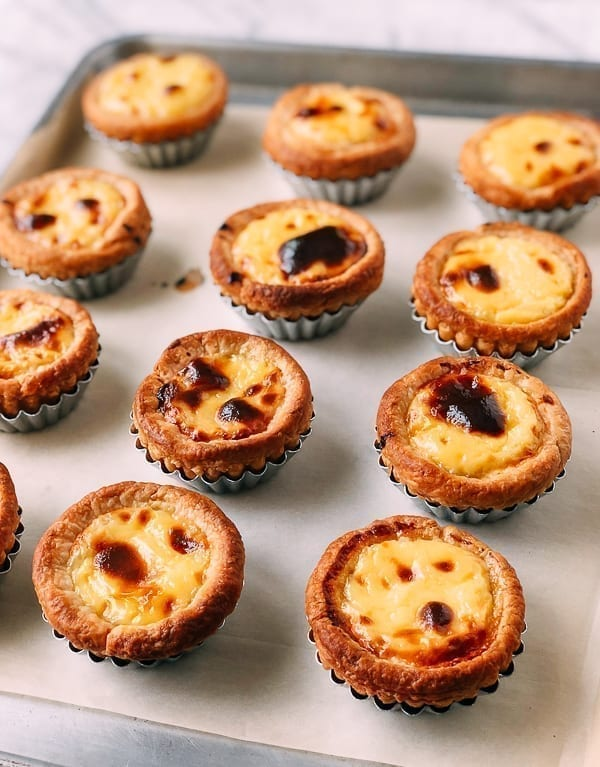

Pastel de Nata

Pastel de Nata or Portuguese Custard Tarts are a deliciously flaky dessert from Portugal.
Ingredients
- 420gr homemade rough puff pastry
- 118ml heavy cream (35% fat dairy cream)
- 115gr granulated sugar
- 300ml whole milk (3.5% milk fat)
- 2 egg yolks
- 4 tsp cornstarch
- 1 1/4 tsp vanilla extract
Steps
Make the pastry shells:
- Roll out the puff pastry into a 10x12 inch (25x30 cm) rectangle. From the 10-inch side, start rolling the pastry into a tight roll until you have a 10-inch long roll. Return the pastry to the freezer for 30 minutes to chill until firm.
- Cut the chilled pastry roll into 12 equal disks that weigh about 35 g each (cut the pastry in half twice, and then cut each of the remaining 4 pieces into 3 equal pieces to get a total of 12). You can also use a ruler for this purpose. Start with 6 pieces first, wrap the rest up, and put them back in the refrigerator or freezer to keep them chilled.
- On a very lightly floured surface, place each piece of dough so the swirls in the dough are facing up. Use a rolling pin to roll each piece into a flat disc about ¼ inch wider than the diameter of the tin and about 3/16 inches thick. Use flour sparingly when rolling out the discs. Using a pastry scraper or metal spatula to lift the discs will help keep them intact.
- Place each disk onto the bottom of each custard tart tin and press the dough onto the tin. When you spread the dough into the tart tin, form a lip that sits on top of the perimeter of the tin. This is crucial for preventing the custard from overflowing. Work quickly so your dough doesn’t heat up. Have some all-purpose flour on the table in case the dough sticks to your fingers, and as you press the dough against the bottom and the sides of the tin, try not to overwork it.
- Freeze the finished tart cups for at least 35 minutes or until frozen. You can make the pastry tins ahead of time and keep them frozen for up to 2 weeks.
Custard filling
- Whisk ½ cup heavy cream, ½ cup sugar, 1¼ cup whole milk, 2 egg yolks, 4 teaspoons cornstarch, and 1¼ teaspoon vanilla extract in a small saucepan until the sugar is dissolved.
- Place over medium low heat, continuing to whisk until the mixture begins to coat the sides of the pan. Patience and low heat are key to a successful custard. The custard should get just hot enough so you see steam beginning to form. This is your signal that the custard is almost ready.
- When the custard is thick enough to coat a spoon, remove from the heat and continue to whisk, ensuring you scrape the sides of the pan. Whisk until it is no longer hot. Do not cook the custard into a pudding, or it will dry out too much during baking! It’s a fairly thin consistency.
- Set aside to cool completely, pressing plastic wrap onto the surface of the custard so a skin does not form on top.
Assembly and Baking
- Preheat the oven to 475 degrees F (245 degrees C). Place the frozen pastry shells on a sheet pan (you can line it with parchment paper for easy cleanup).
- Spoon the cooled custard in each shell until the custard is about 3/16 inches below the top of the pastry shell. Work quickly since you don’t want to give the custard any chance of soaking into the pastry. It’s important to have the oven ready to go once you start pouring custard into the shells.
- Put the pan on the middle rack of your oven, and immediately turn the oven temperature down to 450 degrees F (230 degrees C). The total baking time for your Portuguese Custard Tarts should be 30 minutes, but check them after 20 minutes and rotate the pan if they are browning unevenly.
- After 25 minutes, if the pastry is turning golden brown and you see those signature scorched bubbles forming, you’re on track for another 5 minutes. If the pastry looks like it is browning too fast, you may want to turn the heat off to let residual heat finish the baking process. Oven temperatures are not always accurate and may be slightly hotter or cooler than the temperature you set it for, so play it by ear.
- When baking is complete, remove the custard tarts from the oven (leaving them in the tins), and place on a rack to cool.
- Your Portuguese Custard Tarts will smell incredible, but be sure to wait until they cool, as the custard will be extremely hot. Once they are cool enough to handle, remove the custard tarts from the tins and enjoy them warm!
- To reheat these tarts, preheat the oven or toaster oven to 350 degrees F, and heat them for 7-10 minutes until warmed through.